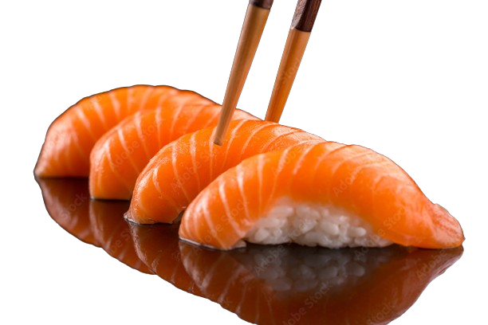
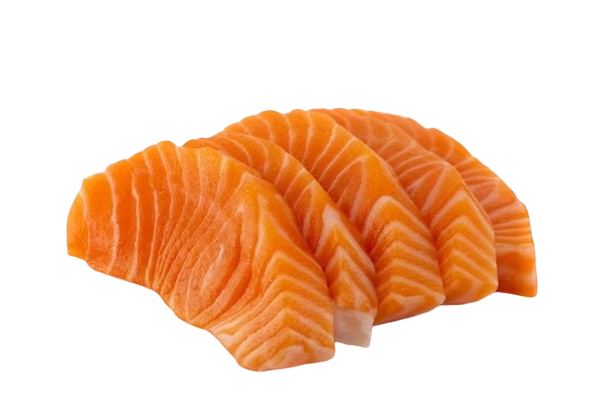
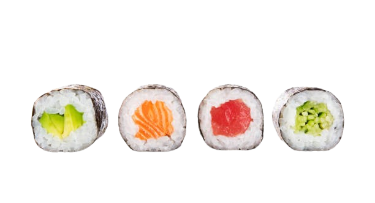
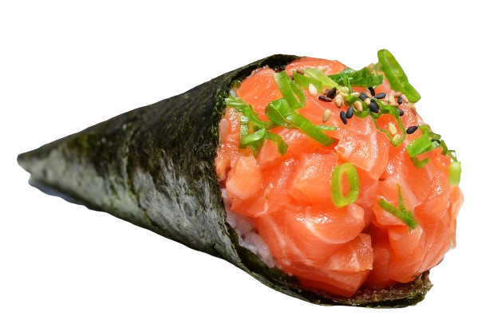

Cardápio Sushi Haven
Nigiri Sushi:
- Salmão - por unidade
- Atum - por unidade
- Camarão - por unidade
- Polvo - por unidade

Sashimi:
- Salmão - porção (6 fatias)
- Atum - porção (6 fatias)
- Peixe Branco - porção (6 fatias)
- Polvo - porção (6 fatias)
- Vieira - porção (6 fatias)
- Camarão - porção (6 fatias)

Makis:
- Califórnia Roll (abacate, pepino, kani e manga) - porção (8 peças)
- Tekka Maki (atum) - porção (8 peças)
- Sake Maki (salmão) - porção (8 peças)
- Kappa Maki (pepino) - porção (8 peças)
- Spicy Tuna Roll (atum picante e pepino) - porção (8 peças)
- Philadelphia Roll (salmão, cream cheese e pepino) - porção (8 peças)
- Ebi Tempura Roll (camarão empanado e molho teriyaki) - porção (8 peças)
- Futomaki (vegetariano) - porção (8 peças)

Temaki:
- Temaki de Salmão - por unidade
- Temaki de Atum - por unidade
- Temaki de Camarão - por unidade
- Temaki de Kani - por unidade
